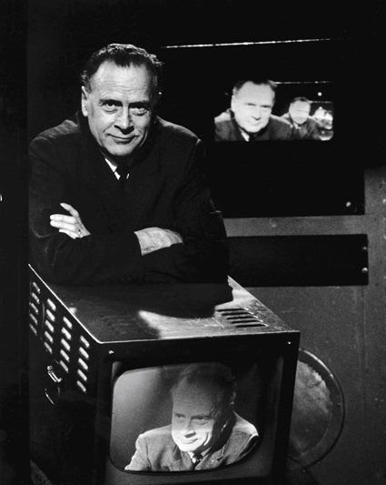

The Laws of Media
Towards the end of his life, McLuhan and his son Eric embarked on a project to update the 1964 Understanding Media; the unexpected result was Laws of Media: The New Science (1988), published after McLuhan’s death (in 1980) by his son. Laws of Media seeks to answer the following questions:
- What statements can we make about media that anyone can test—prove or disprove?
- What do all media have in common?
- What do they do?
These questions resulted in the formulation of the following four laws of media:
- Extension/Enhancement: Every technology extends or amplifies some organ or faculty of the user. What does the medium enhance or intensify?
- Closure/Obsolescence: Because there is equilibrium in sensibility, when one area of experience is heightened or intensified, another is diminished or numbed. What is pushed aside or obsolesced by the new medium?
- Reversal: Every form, pushed to the limit of its potential, reverses its characteristics.
- Retrieval: The content of any medium is an older medium.
This tetrad of the effects of technologies is not sequential, but rather simultaneous. All four aspects are inherent from the start, and all four aspects are complementary.
Examples from the "Tetradic Glossary" of
The Global Village:
Printed Word
- Amplifies private ownership, the competitive goal-oriented individual.
- Obsolesces slang, dialects, and group identity, separates composition and performance, divorce of eye and ear.
- Retrieves tribal elitism, charmed circle
- With flip from manuscript into mass production via print comes the corporate reading public and the "historical sense"
Electric Media
- Amplification of scope of simultaneity and service environment as information.
- Obsolesces the segmented visual, connected, and logical.
- Retrieves the subliminal, audile-tactile dialogue
- Etherialization: the sender gets sent.
Telephone
- Enlarges the impact and speed of the private voice.
- Erodes the body as hardware; creates the disembodied consciousness.
- Retrieves sense of telepathy.
- Reverses into the party-line; omnipresence, like the conference call or teleconferencing.
Radio-Television
- Improves simultaneous access to entire planet—everybody: "On the air you're everywhere"
- Obsolesces wires, cables and physical bodies
- Retrieves tribal ecological environments: echo, trauma, paranoia, and also brings back primacy of the spatial, musical, and acoustic.
- Reverses into global village theater (Orson Welles's Invasion From Mars: no spectators, only actors).
Cable TV
- Amplifies quality and diversity of signal pickup.
- Obsoleces diffusion broadcasting.
- Retrieves early transmission broadcast pattern point-to-point (ship to shore).
- Reversal is flip to home broadcasting.
Teletext
- Printed radio; enhances headline service, like early radio.
- Obsolesces prolonged TV watching; viewer uses service selectively for short intervals.
- Retrieves silent film dialogue card, pictograph or pun style; teletype format.
- Reverses into interactive video-text; qualitative data filter, via data bank.
Computer
- Accelerates logical sequential calculations to speed of light.
- Erodes or bypasses mechanical processes and human logic in all sequential operations.
- Highlights "numbers is all" philosophy, and reduces numbering to body count by touch.
- Flips into the simultaneous from the sequential; accentuates acoustic over visual space to produce pattern recognition.
Global Media Networking
- Instantaneous diverse media transmission on global basis; simultaneous planetary feed and counter-feed.
- Erodes human ability to code and decode in real time.
- Brings back the Tower of Babel: group voice in the ether.
- Reverses into loss of specialism; programmed earth.
